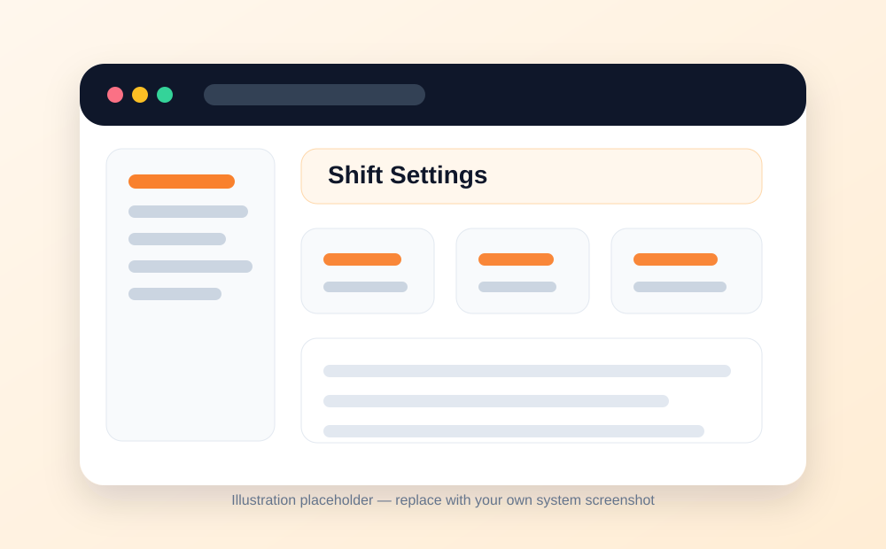
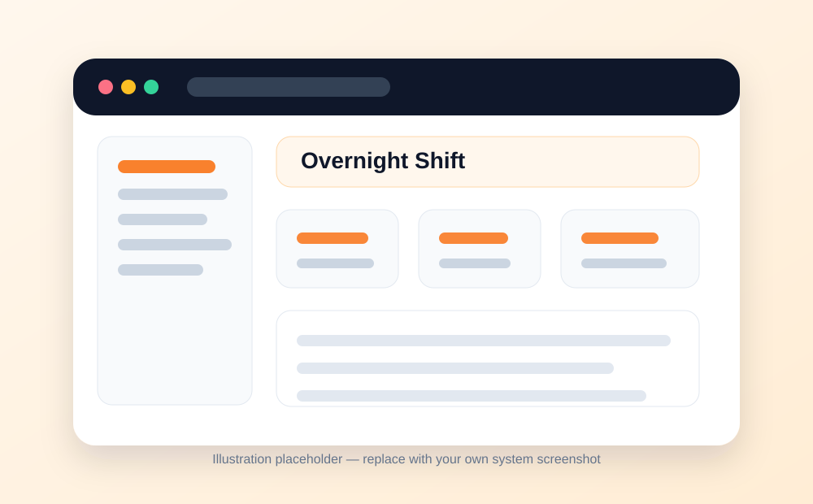
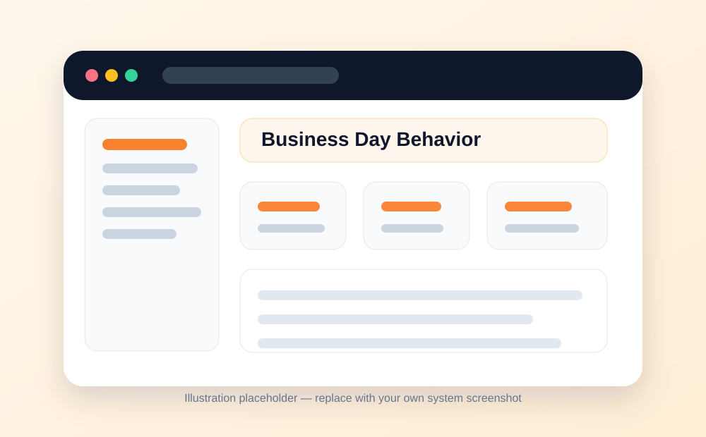

⏱️
Operations
Operational Shifts
Define business-day boundaries so orders, dashboard values, and reports follow the restaurant’s actual operating shifts instead of only calendar days.
What this module is for
- Operational shifts define when the restaurant business day starts and ends.
- This is useful for restaurants that operate late into the night or across midnight.
- When configured, orders and reports can follow shift boundaries instead of midnight-to-midnight calendar days.
Main features
- Create active or inactive shifts.
- Add optional shift names such as Morning, Evening, or Night Shift.
- Set start time, end time, and applicable days of the week.
- Support overnight shifts where the end time is after midnight.
- Apply shift logic to orders, dashboards, and reports where supported.
Typical workflow
- Open Settings, then Operational Shifts.
- Select the branch first if the system has multiple branches.
- Click Add Shift or edit an existing shift.
- Set active status, shift name, start time, end time, and days of week.
- Save the shift and confirm reporting behavior.
Important notes
- If the end time is earlier than the start time, treat it as an overnight shift.
- If no shifts are configured, the system normally uses standard calendar-day boundaries.
- Make sure managers understand how shift timing affects reports and daily totals.
Screens / visual guide
The images below are clean placeholders prepared for the documentation website. Replace them with screenshots from your own installed system when you are ready.


